A single missing page can be part of a larger path. Someone searched, clicked, waited, landed, backed out, and left without a clear reason in one place.
Why traditional website tools miss what matters
The problem
Your website speaks in pieces
A visitor lands from search. A page is missing. A route slows down. A step gets repeated. The signs are there, but they are split across too many tools.
A page can rank, load, and still fail the person who reaches it. Visibility means less when the path after the click is unclear.
When every tool shows a different piece, it becomes harder to know what deserves attention first and what can wait.
CavBot profile
Live path view
Entry point
Search visit
Person arrives from a result and lands on a product page.
Route behavior
Repeated step
The same path is opened again after a slow or unclear step.
Broken page
/pricing-old
The page no longer gives the visitor a clean way forward.
One website profile
Broken page
/pricing-old
Search concern
Weak page signal
Next fix
Repair the path people already reach
Broken pages
Search visibility
Route behavior
Performance feel
These issues cost more
than they look
Lost visitors
People leave before the site gives them a clean path
forward.
Wasted attention
Fixes get chosen from scattered reports instead of
the full story.
Slower recovery
Small problems sit longer because the cause is spread
across different places.
The solution
Website intelligence:
A Modern Approach
CavBot is the first website profile built to connect the full path — pages, routes, search visibility, speed, and the next fix that matters most.
CavBot connects what happened before, during, and after a visitor reaches a page.
Broken pages, weak search signals, repeated routes, and slow moments stop living in separate places.
CavBot shows the issue in context, so the first move is easier to choose.
CavBot recovery view
Live website profile
Broken page
/pricing-old
Still receiving visits.
Search signal
Weak page match
People arrive but do not continue.
Route behavior
Repeated step
The same path is opened again.
Performance feel
Slow decision point
The page feels delayed before action.
CavBot profile
One connected view
Next fix
Repair the route people already reach.
Keep the visitor moving instead of letting an old page break the path.
Next fix
Strengthen the page people find first.
Connect search visibility to the page experience after the click.
Next fix
Simplify the step people repeat.
Find where the path becomes unclear and make the next action obvious.
Next fix
Improve the moment before people leave.
Connect performance feel to the part of the path where attention drops.
Before and after
CavBot
CavBot does not replace the story with another report. It brings the scattered pieces together so you can see what broke, why it matters, and what should be fixed next.
website path comparison
Moment
Before
With CavBot
01
Broken page
A missing page looks like one small error.
CavBot shows the path that still sends people there.
02
Search visit
Search data stops at the click.
CavBot connects the click to what happens on the page.
03
Route behavior
Repeated steps are easy to miss.
CavBot shows where the path loops, slows, or breaks.
04
Performance feel
Speed is measured away from the moment it hurts.
CavBot ties the slow moment to the route people were using.
05
Next fix
The first fix becomes a guess.
CavBot points to the repair that protects the path first.



Bring CavBot into your stack
Connect the platforms your site already runs on, then track pages, routes, and fixes from one clear view.
CavBot
Website profile
Explore integrations